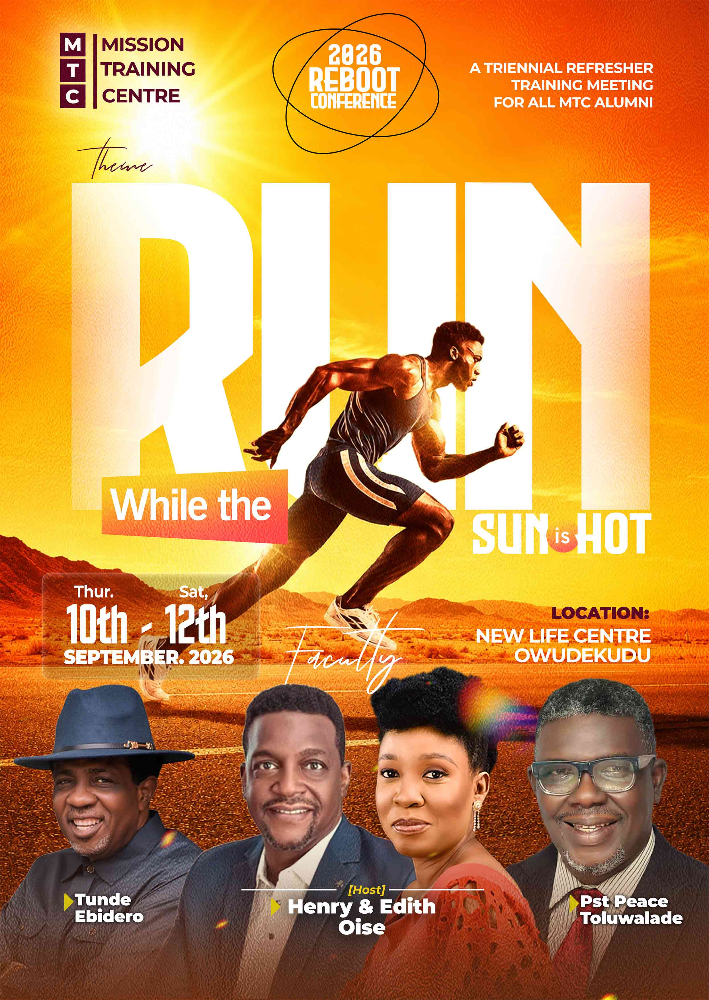

We are still basking in the incredible momentum generated during our maiden triennial MTC Reboot Conference, which was a resounding success. The atmosphere was charged with purpose as our community gathered to refocus and re-fire.
Taking inspiration from John 9:4, our alumni are stepping out to work while it is still day, running while the sun is still hot. What began as a weekend of teaching has already turned into movement: reports are coming in from the field, and the fire that was stirred in the hall is now showing up in homes, churches, and communities.

Grateful for our incredible faculty
We want to extend our deepest appreciation to our guest faculty, who poured out their wisdom and experience during this refresher training:
- Mr. Tunde Ebidero Guest Faculty
- Pastor Peace Toluwade Guest Faculty
Alongside Pastor Edith and myself, this faculty team helped equip our alumni with the fresh strategy and spiritual fire needed for the days ahead.
The conference is over. The mission starts.
We also owe a massive debt of gratitude to every partner, donor, and volunteer who supported this huge endeavor. Your investment is already yielding fruit in the lives of our leaders.
The doors of the conference hall have closed, but the real work has just begun. We are standing shoulder to shoulder with our alumni as they enter the field.
"Will you join us on this mission?"